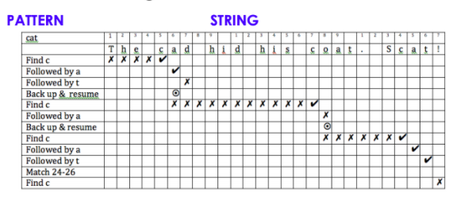

Lab 8: Regular Expressions
Due at 11:59pm on 4/22/2018.
Starter Files
Download lab08.zip. Inside the archive, you will find starter files for the questions in this lab, along with a copy of the OK autograder.
Submission
By the end of this lab, you should have submitted the lab using ok. You may submit more than once before the
deadline; only the final submission will be graded.
- To receive credit for this lab, you must complete questions 1-4 in lab08.py and submit through OK. If you complete the challenge problem, you can skip one of the required questions and still receive full credit.
Regular Expressions (Regex)
For example, say we have a list of personal email ids of people who study at UC Berkeley. We want to find out which address (‘yahoo’ / ‘hotmail’ / ‘gmail’) is the most popular.
emails = ["abc@gmail.com", "xyz@hotmail.com", "cat@yahoo.com", "dog@yahoo.com",
"giraffe@hotmail.com", "bob@gmail.com", "alice@gmail.com", "tom@gmail.com"] The naive way to do this is:
def count_addresses(emails):
hotmail_count = 0
yahoo_count = 0
gmail_count = 0
for s in emails:
if "hotmail" in s:
hotmail_count += 1
elif "yahoo" in s:
yahoo_count += 1
elif "gmail" in s:
gmail_count += 1
return hotmail_count, yahoo_count, gmail_count This works but is a little tedious. We will learn a new technique of pattern matching to make this process easier.
Before we dive into the actual process, do you notice a common pattern across the emails? The address is always directly after an "@" symbol and just before “.com”. Regular expressions are a convenient pattern matching technique, which will simplify the above technique.
How does pattern matching work?
- We have a pattern and a string (example pattern: "@", example string: "bob@gmail.com")
- We are looking for that pattern in the string
- Proceed through the string from start to end (left to right) one character at a time
- All of the pattern must be matched
- Not all of the string needs to match the pattern
Below is an example that matches the specific pattern, "cat" to the given string:

What if we wanted to find all the letters between “@” and “.com”? Here is where Regular Expressions (or 'regex' for short) is most helpful. Below we will discuss a few different terms that are important to know to make the full use of regular expressions.
Note: The syntax for writing a pattern is r’***’ where *** indicates the pattern. Keep this in mind as it is important to ensure that regex understands your input!
Types of Regular Expressions
Literals
- Notation used to represent a fixed value in Python (refer back to Lecture #2)
- Literals in a pattern match on the character itself in the string
- Example: "c" is a literal and will only match with the other “c”s in a string
Character Classes
- Collection of characters that are considered equivalent
- Denoted by [ ]
- Example: [2a5bW] will match EITHER 2 OR a OR 5 OR b OR W in the string
- Note: Here "Class" means set orcollection. This is different from the class concept you learnt in Object Oriented Programing.
| Character Class | Regex Expression | Example |
|---|---|---|
| Any capital letter | [A-Z] | The pattern [A-Z] will match "C" and “T” in the string “CaTch” |
| Any digit | [0-9] | The pattern [0-9] will match 2 and 5 in the string “2a5bW” |
| Any letter or digit | [a-z0-9] | The pattern [a-z0-9] will match 2, a, 5, and b in “2a5bW” |
| Specific letters | c[oa][td] | This pattern will match cot, cat, cod, and cad |
Modifiers
- Modifiers operate on literal characters, character classes, or a combination of the two
- They are typically used for repetition, wild cards, anchors at the beginning or end of the string, alternation, and groups (Don’t worry if this all sounds confusing, it is summarized with examples below!)
| Modifier | Explanation | Example |
|---|---|---|
| ^ | If it is the first character in the pattern, it is an anchor, which tells you what the beginning of the pattern you are looking for is | ^[lg]ame matches "lame" and “game” since they start with either “l” or “g” but does not match with “flame” since the “l”/”g” are not at the beginning of the string |
| $ | It is an end anchor, which tells you what the end of the pattern you are looking for is | cat$ matches “Scat” and “my black cat” since both strings end with “cat” but doesn't match “Scat!” or “my cat is black” |
| ? | Preceding element occurs zero or one time | ba? matches “b” or “ba” since the preceding character “a” occurs zero times in “b” and one time in “ba”. It wouldnt match “baa” |
| + | Preceding element occurs one or more times | ba+ matches “ba”, “baa”, “baaaaa” since “a” occurs at least one time in each but not “b” |
| * | Preceding element occurs zero or more times | ba* matches “b”, “ba”, “baa”, “baaaaa” since “a” occurs zero or more times in each |
| . | Wild card - i.e. it matches any character except a new line | . would match “c” or “a” or “2” or “W” in “ca2w”. .* would match any character any number of times i.e. it would match the whole string”ca2w” |
| [ ] | Character class - every symbol (+, ?, . etc.) turns into a character when put inside brackets | E.g. [ao] matches “a” or “o”, [+*] matches “+” or “*” |
| - | Range within a character class | [a-cx-z] matches “a”, “b”, “c”, “x”, “y”, or “z” |
| a|b | Matches either pattern a or b | abc|vwxyz matches either “abc” or “vwxyz” |
| () | Identifies a subpattern | ab(cd|x)yz matches “abcdyz” or “abxyz” |
Some other common regular expressions are shown below:
| Expression | Explanation |
|---|---|
| \w | Matches with any alphanumeric character i.e. a letter, a digit, or underscore |
| \d | Matches with digits [0-9] |
| \s | Matches with a single white space character (space, newline, return, tab, form) |
| \b | boundary between word and non-word |
| [^..] | matches any single character not in square bracket. Note the difference between "^[..]" and “[^...]” |
| \ | It is used for special meaning characters like \. to match a period or \+ for plus sign. |
| \t, \n, \r | Matches tab, newline, return |
Note: This is a very useful tool when trying out regex expressions.
Important Regex Methods
| Method | Explanation |
|---|---|
| re.search(pattern, string) | Finds the given pattern from any position of the string but only returns the first occurrence of the pattern |
Example:import reresult = re.search(r’Analytics’, ‘AV Analytics Vidhya AV’)print result.group(0)Output: Analytics |
|
| re.findall(pattern, string) | Returns a list of all matching patterns in the string |
Example:import reresult = re.findall(r’AV’, ‘AV Analytics Vidhya AV’)print resultOutput: [‘AV’, ‘AV’] |
|
| re.split(pattern, string) | Splits the string by occurrences of the given pattern |
Example:import reresult = re.split(r’i’, ‘Analytics Vidhya’)print resultOutput: [‘Analyt’, ‘cs V’, ‘dhya’] |
|
| re.sub(pattern, repl, string) | It searches for the given pattern and replaces it with a new substring. If the pattern isn’t found, the same string is returned |
Example:import reresult = re.sub(r’cats’, ‘dogs’, ‘I love cats.’)print resultOutput: ‘I love dogs.’ |
Based on the first example we saw, let us now see how we can apply regex to find the most popular address used.
emails = ["abc@gmail.com", "xyz@hotmail.com", "cat@yahoo.com", "dog@yahoo.com",
"giraffe@hotmail.com", "bob@gmail.com", "alice@gmail.com", "tom@gmail.com"]
import re
def count_addresses_v2(emails):
counts = {}
for s in emails:
address = re.search(r'@[a-z]*', s).group(0)[1:]
if address in counts.keys():
counts[address] += 1
else:
counts[address] = 1
return counts You can try this out in Python by downloading the lab08.py file and running the following line on your Terminal:
python -i lab08.py and in your Terminal, running the following line of code:
print(count_addresses_v2(emails))Questions
Question 1: Find an example string
Use the tables given above to find one example of a string that the following pattern would match: r’^[a-z]+$’
"*** YOUR CODE HERE ***"
example = "this example"
def match_example():
"""Choose a string that will match the given pattern.
>>> match_example()
True
"""
global example
pattern = r'^[a-z]+$'
return len(re.findall(pattern, example)) > 0Use OK to test your code:
python ok -q match_example --localQuestion 2: Match Names
Write a pattern which will find all the names of students in the following string: "name: Bob, age: 14, name: Amanda, age: 17, name: Tim, age: 30".
Hint: Do the names start with a lowercase letter or an uppercase letter?
def match_names(s):
"""Return a list of all the names in the given string.
>>> match_names("name: Bob, age: 14, name: Amanda, age: 17, name: Tim, age: 30")
['Bob', 'Amanda', 'Tim']
"""
"*** YOUR CODE HERE ***"
pattern = r'[A-Z]\w*'
return re.findall(pattern, s)Use OK to test your code:
python ok -q match_names --localQuestion 3: Find Vowels
Write a function which will return all the words that start with a vowel in a given string.
def find_vowels(s):
"""Return a list of all the words that start with a vowel in the given string.
>>> find_vowels('Alpha is the first greek alphabet.')
['Alpha', 'is', 'alphabet']
>>> find_vowels('Eve is an amateur cook.')
['Eve', 'is', 'an', 'amateur']
>>> find_vowels('random words')
[]
"""
"*** YOUR CODE HERE ***"
result = re.findall(r'\b[aeiouAEIOU]\w+', s)
return resultUse OK to test your code:
python ok -q find_vowels --localQuestion 4: Find GPAs
Now let us see how we could use Regex to extract information from a website, which is typically what data mining involves. Click on the lab08.html file in the zip folder. It should open a webpage with a list of students. Now right click on the file and open it with Sublime or another text editor. This will show you the source code behind the webpage. Don’t worry about understanding the code or what it means! This will not be tested, it is only to give you an example of how regex is applicable in the real world!
Our goal is to extract a list of all the GPAs shown in the list. Write a function which takes in the source file as a string and returns a list of the GPAs.
Hint: Notice that all the GPAs are written in the format x.y where both x and y are digits. Think about how you can use this similarity to write a pattern.
def find_gpas(s):
"""Return a list of all the words that start with a vowel in the given string.
>>> find_gpas('<html><HEAD><TITLE>List of Students</TITLE></HEAD><body BGCOLOR="FFFFFFF"><HR><H1>This is a List of Students in a class at Berkeley</H1><HR><table style="width:20%"><tr><th>Name</th><th>Gender</th> <th>GPA</th></tr><tr><td>Jill Smith</td><td>Female</td> <td>3.7</td></tr><tr><td>Eve Jackson</td><td>Female</td> <td>3.5</td></tr><tr><td>Hannah Summers</td><td>Female</td> <td>2.3</td></tr><tr><td>Noah Johnson</td><td>Male</td> <td>3.2</td></tr><tr><td>Henry Tanner</td><td>Male</td><td>3.6</td></tr><tr><td>Tom Cook</td><td>Male</td><td>2.6</td></tr></table></body></html>')
['3.7', '3.5', '2.3', '3.2', '3.6', '2.6']
"""
"*** YOUR CODE HERE ***"
pattern = r'\d.\d'
return re.findall(pattern, s)Use OK to test your code:
python ok -q find_gpas --localChallenge Question
Questions in this section are not required for submission. However, if you do a challenge question, you can skip another question on the lab without losing points.
Question 5: Find Names
Write a function which takes in the source file from the previous question and returns a list of student names.
def find_names(s):
"""Return a list of all the words that start with a vowel in the given string.
>>> find_names('<html><HEAD><TITLE>List of Students</TITLE></HEAD><body BGCOLOR="FFFFFFF"><HR><H1>This is a List of Students in a class at Berkeley</H1><HR><table style="width:20%"><tr><th>Name</th><th>Gender</th> <th>GPA</th></tr><tr><td>Jill Smith</td><td>Female</td> <td>3.7</td></tr><tr><td>Eve Jackson</td><td>Female</td> <td>3.5</td></tr><tr><td>Hannah Summers</td><td>Female</td> <td>2.3</td></tr><tr><td>Noah Johnson</td><td>Male</td> <td>3.2</td></tr><tr><td>Henry Tanner</td><td>Male</td><td>3.6</td></tr><tr><td>Tom Cook</td><td>Male</td><td>2.6</td></tr></table></body></html>')
['Jill Smith', 'Eve Jackson', 'Hannah Summers', 'Noah Johnson', 'Henry Tanner', 'Tom Cook']
"""
"*** YOUR CODE HERE ***"
pattern = r'[A-Z]\w*\s[A-Z]\w*'
return re.findall(pattern, s)Use OK to test your code:
python ok -q find_names --local